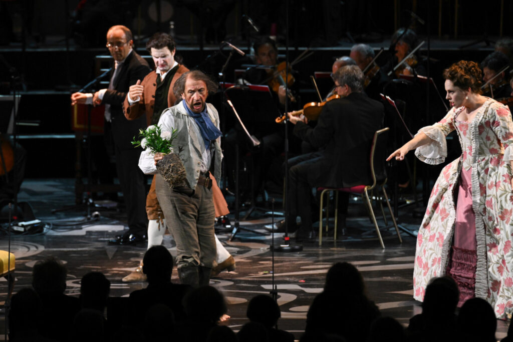

"Alexander Vassiliev had great fun as the one-armed, drunken Antonio...Mozart's Le nozze di Figaro performed in the Royal Albert Hall is never going to be ideal, but thanks to the energy and intelligence of the cast this was perhaps one of the most satisfying performances I have seen in a long time" - planethugill.com
"All of the smaller roles were well taken: Alexander Vassiliev was particularly noteworthy as Antonio, very funny..." - operatoday.com
Credit: Chris Christodoulou
Glyndebourne Festival - Le nozze di Figaro
Alexander Vassiliev sings Antonio in Le nozze di Figaro at the Glyndebourne Summer Festival.
First performance on 29 June with further performances in July (1, 5, 7, 11, 15, 17, 20, 22, 25, 27, 30) and August (2, 5, 8, 13, 16, 18, 21).
Alexander Vassiliev sings Skomorokh in Dmitri Tcherniakov's production of The Tale of Tsar Saltan at the Teatro Real in Madrid, Spain.
First performance on 30 April with further performances on 2, 4, 6, 8, 10 and 11 May. For more details click here.
In June, the Wolfgang Gussmann/Willy Decker production of La traviata will also be revived in Madrid for a number of performances. Further information about this production is found here.
Der fliegende Holländer - Valencia
Fresh from its recent staging in Turin, Wolfgang Gussmann's production will be revived at the Palau de les Arts Reina Sofía in Valencia.
First performance on 27 February with a further 5 performances on 2, 5, 8, 11 and 14 March. Click here for casting details and an overview of the production.